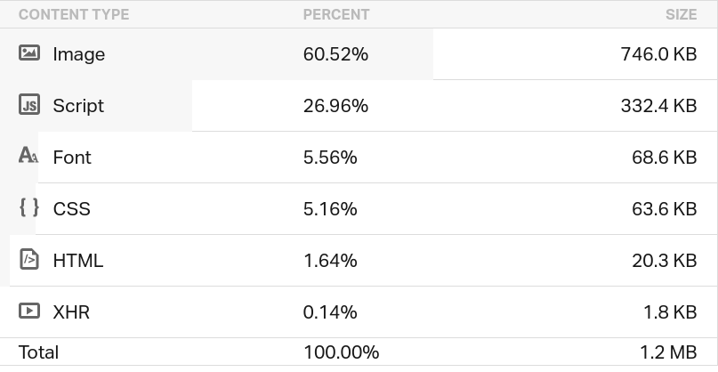
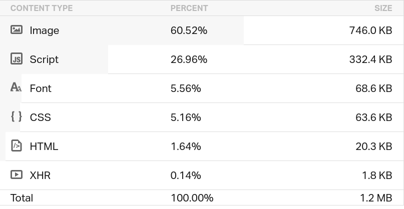

Exemples de site low-tech
Nous avons vu dans le chapitre précédent le développement et
l'hébergement d'un site low-tech, et nous avons vu dans le chapitre 4
les différents types de site web. Donc dans ce chapitre nous allons
donner quelques exemples de sites (low-tech ou non), et les comparer. Ce
chapitre peut être lu comme la suite directe de celui sur le
développement car nous allons voir certaines des techniques utilisées
par les sites web low-tech.
Outil : Pingdom
Afin de pouvoir comparer les performances des différents sites, il est
nécessaire d'utiliser des outils qui vont nous fournir des informations
sur les pages web à comparer. Nous aurons ainsi des mesures, du même
test, qui nous servirons de base de comparaisons. Il existe de nombreux
tests accessibles gratuitement en ligne comme on s'en aperçois en
recherchant "website speed test" sur n'importe quel moteur de recherche.
Même Google fournit un test :
PageSpeed Insights - Google Developers.
Ici, avant de présenter les exemples des sites, nous allons donc
présenter un de ces outils, Pingdom, un site web qui offre une
surveillance fiable et claire de la disponibilité et des performances de
site web. Il va nous servir pour comparer les sites "normaux" et les
sites low-tech.
Tout d'abord, Pingdom va évaluer le site que nous lui fournissons, il
nous renvoie une note globale sur la performance, la taille de la page,
le temps de chargement. Ensuite il nous offre des notes (allant de 0 à
100 et de F à A) sur des critères permettant d'améliorer la performance.
Voici une liste non exhaustive des critères :
-
Ajouter des en-têtes Expires
Les pages web deviennent de plus en plus complexes avec plus de
scripts, de feuilles de style, d'images et de Flash dessus. Une
première visite sur une page peut nécessiter plusieurs requêtes HTTP
pour charger tous les composants. En utilisant les en-têtes
Expires, ces composants peuvent être mis en cache, ce qui
évite les requêtes HTTP inutiles sur les pages suivantes. Les
en-têtes Expires sont le plus souvent associés à des images, mais
ils peuvent et doivent être utilisés sur tous les composants de la
page, y compris les scripts et les feuilles de style.
-
Compresser les composants avec gzip
La compression réduit les temps de réponse en réduisant la taille de
la réponse HTTP. gzip est la méthode de compression la plus
populaire et la plus efficace actuellement disponible et réduit
généralement la taille de la réponse d'environ 70%. Environ 90% du
trafic Internet actuel passe par des navigateurs qui prétendent
prendre en charge gzip.
-
Faire moins de requêtes HTTP
La diminution du nombre de composants sur une page réduit le nombre
de requêtes HTTP requises pour afficher la page, ce qui accélère le
chargement des pages. Voici quelques moyens de réduire le nombre de
composants : combiner des fichiers, combiner plusieurs scripts en un
seul script, combiner plusieurs fichiers CSS dans une seule feuille
de style et utiliser des sprites CSS ainsi que des images
maps. Les sprites CSS font référence à une technique qui
consiste à regrouper plusieurs images en une afin de réduire le
nombre de requêtes, l'idée est ensuite d'utiliser le CSS pour
sélectionner l'image que l'on souhaite à un moment donné. Une
image map permet de rendre des zones d'une image cliquable,
mélangées au sprites ils permettent d'aller plus loin dans le
regroupement d'images.
-
Utiliser des domaines sans cookie
Lorsque le navigateur demande une image statique et envoie des
cookies avec la demande, le serveur ignore les cookies. Ces cookies
sont du trafic réseau inutile. Pour contourner ce problème,
assurez-vous que les composants statiques sont demandés avec des
demandes sans cookie en créant un sous-domaine et en les y
hébergeant. Un sous-domaine se présente sous cette forme :
sous-domaine.domaine.org. Il faut savoir que les sous-domaines
héritent des cookies placés sur leur domaine parent. Ainsi, lorsque
l'on souhaite faire un appel à un fichier statique sans traiter de
cookies, il faut s'assurer que le domaine/sous-domaine n'a pas de
cookie. La bonne pratique serait de mettre ses cookies sur le
sous-domaine www.domaine.org et les fichiers statiques sur
static.domaine.org en ne laissant aucun cookie sur le domaine
lui-même.
-
Réduire le nombre de recherche DNS
Le système de nom de domaine (DNS) mappe les noms d'hôte aux
adresses IP, tout comme les répertoires téléphoniques associent les
noms des personnes à leurs numéros de téléphone. Lorsque vous tapez
l'URL www.utc.fr dans le navigateur, ce dernier contacte un
résolveur DNS qui renvoie l'adresse IP du serveur. Le DNS a un coût
; il lui faut généralement de 20 à 120 millisecondes pour rechercher
l'adresse IP d'un nom d'hôte. Le navigateur ne peut rien télécharger
de l'hôte tant que la recherche n'est pas terminée. Un bon moyen de
réduire le nombre de recherche DNS est d'éviter d'utiliser trop
d'URL différentes lorsque ce n'est pas utile ; un exemple serait
d'utiliser un seul fournisseur de CDN (serveur qui héberge des
fichiers statiques) pour ses besoins en CSS, JavaScript et images.
-
Éviter les redirections d'URL
Les redirections d'URL sont effectuées à l'aide des codes d'état
HTTP 301 et 302. Elles indiquent au navigateur d'aller vers un autre
emplacement. L'insertion d'une redirection entre l'utilisateur et le
document HTML final retarde tout sur la page car rien sur la page ne
peut être rendu et aucun composant ne peut être téléchargé jusqu'à
ce que le document HTML arrive.
-
Éviter les src ou href vides
Vous pouvez vous attendre à ce qu'un navigateur ne fasse rien
lorsqu'il rencontre une image vide src. Cependant, ce n'est pas le
cas dans la plupart des navigateurs. IE fait une demande au
répertoire dans lequel se trouve la page; Safari, Chrome, Firefox 3
et les versions antérieures font une demande à la page elle-même. Ce
comportement pourrait corrompre les données des utilisateurs,
gaspiller les cycles de calcul du serveur générant une page qui ne
sera jamais affichée et, dans le pire des cas, paralyser vos
serveurs en envoyant une grande quantité de trafic inattendu.
-
Mettre JavaScript à la fin du code
Les scripts JavaScript bloquent les téléchargements parallèles;
autrement dit, lorsqu'un script est en cours de téléchargement, le
navigateur ne lancera aucun autre téléchargement. Pour accélérer le
chargement de la page, déplacez les scripts vers le bas de la page
s'ils peuvent être différés.
-
Réduire le nombre d'élément DOM
Une page complexe signifie plus d'octets à télécharger et un accès
au DOM plus lent en JavaScript. Réduisez le nombre d'éléments DOM
sur la page pour améliorer les performances. Cette technique ne fait
pas vraiment sens pour un développeur web qui écrit son propre HTML,
cependant il faut le garder en tête lorsque des framework JavaScript
(comme React.js) sont utilisés pour générer du HTML. Ces framework
ont tendances à créer un grand nombre d'élément DOM.
Pingdom nous indique aussi la taille de chaque type de contenu comme les
vidéos, les images, les scripts, le code HTML, le code CSS, la police
d'écriture, les liens de redirections, etc.
Les sites vitrines
Comme nous l'avons vu au chapitre 4, un site vitrine est un site web qui
expose ce que proposent différents partis comme des PME, des artisans ou
des entreprises de services. Les sites vitrines sont intéressants, car
ayant pour rôle de représenter le site et l'organisme sous-jacent ces
pages donnent un bon aperçu du site dans son ensemble. Aussi celles-ci
ont pour mission d'être attractive afin de donner une bonne image de la
compagnie tout en étant assez rapide au chargement pour ne pas repousser
une partie des visiteurs.
Ici, notre exemple de site normal sera celui de BenjaminCode
qui montre ses produits (vidéos YouTube) ainsi que ses compétences dans
le Web, nous allons le comparer avec un site vitrine low-tech, le site
de The Green Emporium, une
entreprise qui offre les meilleures alternatives aux produits du
quotidien tout en réduisant le plus possible l'impact écologique sur la
planète et les animaux.

le site vitrine de
BenjaminCode
Niveu de performance : 74 C
Taille de la page : 13.5 MB
Temps de chargement : 786 ms


le site de The
Green Emporium
Niveu de performance : 84 C
Taille de la page : 799.8 KB
Temps de chargement : 286 ms


Nous observons que le site vitrine de The Green Emporium est plus
performant que le site de BenjaminCode avec une différence de 10 points
selon l'outil Pingdom, il est aussi environ 17 fois plus petit. Il faut
noter que c'est un cas exceptionnel car le site de BenjaminCode contient
enormément de vidéos. Le temps de chargement de ce dernier est 2.5 fois
plus lent que son homologue low-tech.
Ensuite, pour les différents critères de performances, nous voyons que
le site de The Green Emporium a des meilleures notes que le site de
BenjaminCode, notamment dans les critères comme "Compresser les
composants avec gzip". Cependant, il reste toujours des points à
améliorer pour avoir une meilleure performance comme le critère "Ajouter
des en-têtes Expires".
Enfin, en observant les différents contenus, nous pouvons constater que
les contenus les plus lourds sont bien les vidéos (XHR), les images et
les scripts que nous avons parlé dans les chapitre précedent, ces trois
types de contenus répresentent 90% d'un site web.
Les blogs
Les blogs sont une partie importante du Web, ils permettent à n'importe
qui de s'exprimer sur tous les sujets. Cela est accentué par le fait que
les gens aiment lire des billets de blog ; c'est plus de 400 millions
d'internautes qui visitent des blogs tous les mois.
Si il est possible aujourd'hui, pour n'importe qui, d'ouvrir un blog,
c'est parce qu'il existe des technologie comme WordPress qui simplifie
le processus. L'effet secondaire de cette simplification est la perte en
performance et le fait que cette performance (que énormément de sites
partagent) soit directement liée à un groupe de développeurs qui ne
suivent pas forcément les principes énoncées jusqu'à présent dans nos
chapitres.
Pour illustrer nos propos nous comparons ces trois blogs (cliquez sur la
partie colorée pour avoir les résultats) :
On remarque immédiatement la différence, le blog low-tech respecte
toutes les recommendations de Pingdom et obtient le meilleur score. On
voit encore une fois que ce sont les images qui prennent le plus de
place dans ces trois sites ; c'est donc normal que le blog low-tech ait
là-aussi de meilleurs résultats car nous avions vu dans un chapitre
précédent que les développeurs de ce blog avaient fait usage de
différentes techniques de compression d'image (dithering par exemple).
Sources
Pour aller plus loin...

 
